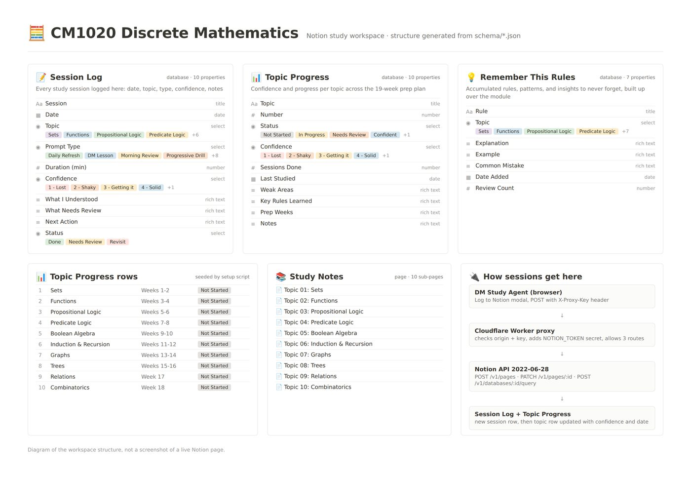

Schema-driven workspace provisioning over a REST API
A workspace of three databases, a hub page and eleven seeded pages, defined as JSON schema files and created by one dependency-free script in about two minutes, so the structure is reproducible rather than hand-built once and undocumented.
Project scope
The workspace was originally built by hand through a chat connector. That works once. It leaves no definition anyone can inspect, no way to rebuild it, and no way for a second person to stand up the same structure.
Constraints
- The API rate-limits at roughly three requests per second.
- Payload shape is version-dependent, and the format keeps changing across API versions.
- The integration can only write where it has been explicitly invited, which is a setup step users forget.
- Should run with no install step.
Approach
- Move the schema out of the chat transcript and into version-controlled JSON, one file per database.
- Drive creation from those files so the definition and the artifact cannot drift apart.
- Pin the API version explicitly rather than tracking whatever is current.
- Offer a dry run, because a partial failure leaves debris that has to be deleted by hand.
Implementation
Twenty-five API calls in sequence: the hub page, three databases from their schema files, ten seeded rows, and eleven notes pages. A 350 millisecond pause between calls keeps it under the published rate limit. On failure it stops and names the step rather than continuing into an inconsistent state.
Two design decisions worth stating
Selects rather than relations. Every database references topics through a select field rather than a relation. A client can write a select using only its name. A relation requires resolving the related page identifier first, which turns one write into a query plus a write. Shared option names and colors keep the databases visually coherent without the coupling.
Ordinals inside the labels. Confidence values read "3 - Getting it" rather than "Getting it", so they sort correctly while still reading naturally. A small thing that removes the need for a separate sort key.
The property-shape bug
The chat connector flattens dates into a single key. The REST API requires a nested object. Mixing the two produced a validation error in the consuming application that took a while to trace, because the error named a field rather than the format. The schema files exist partly so that shape is written down once and reused.

Result
- A workspace anyone can rebuild from a repository in about two minutes.
- The schema is inspectable and versioned rather than living in a chat history.
- Runs on Node with no dependencies to install or audit.